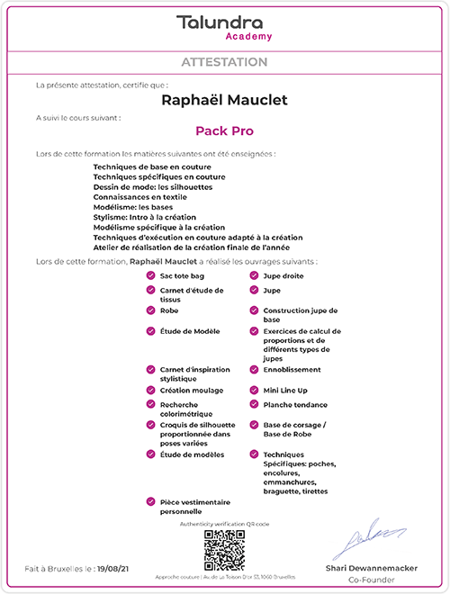

Case Study
Jamais 2 sans 3
Pour honorer ce proverbe, pour la troisième fois me revoilà dans ce TFA.
Cette fois-ci pas le droit à l’erreur. J'ai encore beaucoup d'appréhension à l'égard de ce projet, car je connais déjà les problèmes que je rencontrerai au cours de ce périple. Mais cette fois-ci, c'est la bonne !
Motivation pour l'année
Après une formation en design de mode, l'idée d'un thème autour de ce qui me passionne me semble tout à fait claire. J’avais déjà exploré cette idée de projet l’année dernière et je demande confirmation à mes professeurs de pouvoir peaufiner cela, car c’est vraiment quelque chose qui me tient à coeur et qui pourrait j’espère être un tremplin pour ce que j’envisage de mon avenir dans le milieu de la fabrication de vêtement.
Mon idée de projet
Créer une application pour promouvoir et donner de la visibilité à mes vêtements, patrons que je crée. Mais en mettant au point une façon d'offrir à mes clients la possibilité d'avoir parfaitement ce qu'ils veulent aux détails près.
Les recherches
Pour mes recherches et mon public cible, un peu de facilité. J'ai déjà eu beaucoup de retours de l'année dernière, lorsque j'ai fait mon sondage à l'académie, mais ici je vais être intéressé par un public plus consommateur et non créatif.
Je tente d'énumérer tous les détails que les gens imaginent d'une telle application.
Audit
Lors d’un précédent atelier appelé “Rethinking User Experience” nous avons utilisé un audit, pour comparer les fonctionnalités d’un site avec ses concurrentes ou autres plateformes qui pourraient avoir recours à ce même genre d'interaction.
Je décide alors d'utiliser l'outil de personnalisation que la plupart des gens utilisent, la custom de Nike et d'autres plus axés sur la mode comme Bershka, Dior, ...
Une solution sur mesure!
Après mes questions à mon panel et mon audit, une chose est claire pour moi. Il y a de la customisation mais pas de sur mesure. Soit l’un soit l’autre.
Je trouve que d’exploiter cette idée à la fois de promouvoir ses propres pièces et donner la possibilité de pouvoir la customiser sans s’éloigner de l’idée principale peut vraiment faire la différence pour se démarquer.
Prototype v1
Je réalise ensuite mes premiers prototypes et je m'appuie à nouveau sur mon expérience de l'année écoulée. Je rafraîchis mon interface et je la rends la plus épurée possible pendant la customisation.
Cette fois je n’ai pas fait vraiment de petit prototype papier ou noir et blanc car j’avais déjà une idée plus concrète et la principale de mon application est vraiment le visuel du vêtement.
Test utilisateur du premier prototype
Pour mes premiers tests utilisateurs, j'ai un scénario ; laissez l'utilisateur voyager à travers l'application et aller personnaliser un corset ou une pièce dont il décide.
Ce test me permet de tirer immédiatement ces conclusions;
- La navigation dans l'application comme je l'ai fait est trop complexe, l'utilisateur doit trop fouiller avant d'arriver à ce qu'il veut. Par conséquent, je dois trouver une façon de le faire plus directement.
- Lors du choix du vêtement, le modèle n’est pas assez mis en valeur, ce qui fait que l’utilisateur clic sur la pièce souvent dans l’optique de la voir en plus grande alors que cela lance directement la customisation. Ensuite, je dois placer mes pièces plus en évidence sur mes écrans.
- Et en ce qui concerne la personnalisation, avoir tout sur un seul écran est un trop grand problème pour mes utilisateurs. J'ai le sentiment de les abandonner à leur sort, quand je pourrais les guider pas à pas et créer quelque chose de plus interactif.
Ma V2 et mes solutions aux précédents problèmes !
Pour ma V2 connaissant déjà les principaux points que j'ai dû apporter, je constate que je fais déjà un grand bond en avant. Je peux considérer cela comme une idée concrète, beaucoup plus claire.
Mes solutions pour Les problèmes de la V1 sont;
- Pour la navigation, j'organise ma page d'accueil directement dans plusieurs catégories "les hauts, les bas, les accessoires" pour le menu. Dans ces catégories l'utilisateur sera donc en mesure de choisir immédiatement quel vêtement il souhaite voir.
- Grâce à ce choix d'organisation précédent, je peux présenter mes pièces en plaçant le modèle en plein écran. Et donc laissez l'utilisateur parcourir les gabarits pour simplement sélectionner celui qui lui plaît.
- Au cours de la personnalisation, je fais des étapes par étapes et je fais quelque chose de très parlant et visuel. J'utilise une jauge où les dimensions standard sont indiquées de sorte que lorsque l'utilisateur indique ses mesures et il peut aussi repérer comment le vêtement devrait tailler.
Les conclusions de cette version
Après avoir re-testé et montré mes améliorations à mon panel, un grand nombre de commentaires positifs. Je ne vois pas beaucoup de gens se perdre chez mes usagers plus jeunes ou plus âgés. Beaucoup de commentaires positifs sur la visualisation des tailles et le changement de l'organisation de la page d'accueil pour choisir les vêtements.
Un peu de couture pour plus de visuel.
Mettons ça en pratique pour nous amuser. Je design un corset et je le réalise de sorte à ce qu’il y ait de quoi le personnaliser et être capable de jouer un peu dans mon application. OK, ce n'est pas du web, mais ça fait toujours partie du thème ! Un peu de bolduc, tirette, empiècement,.. de nombreuses choses que les clients pourraient vouloir personnaliser.
Après avoir réalisé ma pièce, un peu de Photoshop pour modifier la couleur du tissu, les couleurs des accessoires etc. Et voilà ! Je les ajoute dans mon app et je relie le tout pour ma v3.
Direction artistique
Pour la DA, simple. Je trouve? Il faut quelque chose de facile à lire, mais aussi un peu personnel, nous sommes designer voyons. Blague à part, je pense que c’est important d’avoir un peu de soi si on veut une marque avec une bonne éthique et cela donne plus d’envie de s’investir quand le produit nous plaît à nous-mêmes en premier. Ça donne confiance en soi, c'est important parfois...
C'est pourquoi je décide par rapport à l'année dernière de ne pas nommer cette marque, ce produit, en mon nom mais de trouver son propre nom. Après avoir cogité, je décide de l’appeler “ On point “ qui est connu dans le monde de la couture, et vu la logique du sur mesure et du custom je pense qu’il y a une bonne évidence.
Pour le reste, typographie très simple pour la lisibilité, c'est une application ouverte à tout le public donc on n'en fait pas de trop. J'ai choisi la typo “outfit” comme par coïncidence elle est très bien, très simple et ... Outfit? C’est comme si elle était destinée à cela.
Et la petite touche personnelle, pour lui donner un peu d’âme. Une typo un peu gothique que je double car je trouve ça trendy et cela apportera un peu de couleur. Le seul élément graphique que j'utilise est un clin d'œil aux stylistes, le coin du patronage qui peut aussi m'aider à structurer mon contenu.
Cette fois c’est la bonne, le MVP!
Après avoir ajouté toutes les images des personnalisations possibles, la pièce sous tous les angles voila mon MVP! Je le refais tester à mon panel et tout va bien.
Je demande également l'opinion de mes enseignants et il est dû moitié-moitié? Ça plaît à certains et pas à d'autres.
Suite à quelques remarques de Mme Wera, je fais quelques ajustements;
- L’alignement de certains textes
- Quelque contraste
- Taille de certains éléments graphiques et icône
Je décide néanmoins de prendre un pari (risqué?), la typo ne plaît vraiment pas alors que j’aime particulièrement bien le contraste qu'elle apporte et aussi la vignette que je mets derrière les vêtements pour apporter un peu de profondeur à mon app.
Donc je décide de demander quelques critiques d'autres professeurs et aussi de certaines personnes qui ont essayé mon mvp. Encore une fois, les opinions sont différentes et je décide donc de rester fidèle à ce que j'aime parce que, après tout, il est censé être un produit personnel. J’irai défendre cela à l’oral.
La présentation
Le stress, comme d’habitude.. Devant tout le monde c'est très difficile pour moi de garder mes moyens et de parler naturellement. Mais je reste confiant. Je trouve mon produit fini, nettement mieux que l'année dernière par exemple.
Mais là c’est la douche froide, j’ai le sentiment de ne pas me faire comprendre. J’essaye de défendre mon projet et d'expliquer les choix mais j’ai l’impression que rien n’y fait. Malgré avoir des explications logiques pour moi, des décisions justifiées et prendre des risques? Après tout, c’est cela ma définition du design pour prendre des risques et rester fidèle à son style. Ce ne sera pas récompensé cette fois....
Je pense aussi que ce qui m’a porté préjudice est de ne pas avoir rendu mon case-study même s'il était fini, car je manquais de temps pour le design de celui-ci. Cela m'aurait peut-être permis de mieux démontrer et expliquer mes choix qu'au cours de la présentation.
Je vais juste suivre les conseils et m’aligner, je veux en finir avec ce projet.
Vacances?
Oui un peu ça fait du bien. Un peu de temps pour voyager et se libérer l’esprit.
En route vers la présentation d'août.
Après que j'ai parlé avec Mme Wera et eu le feedback de ce qui était effectivement problématique, pour mon petit changement de conception, mais dans l'ensemble, il est très bien.
Changer de typo, pour une typo plus neutre on va dire. On la connait, la Didot. Celle qui est à la base de ce superbe magazine “ Vogue “. Elle permet le contraste grâce au sérif.
Et quelques petits changements;
- 1-2 icônes pas très lisibles et modification de la taille
- Taille des éléments cliquables.mon pop-up d’abandon de processus de custom
- L’inversion de la croix pour fermer le menu.. oups.
Et voilà on est parti!
Le code, vidéo & fin!
Reste à coder mes changements pour la typo et ajouter mon case study. Ma petite vidéo que voici!
Je trouve globalement que mon app à bien évolué comparé à l'année passée. J’espère vraiment en avoir fini avec tout ça et pouvoir accéder à cette 3ème et dernière année.